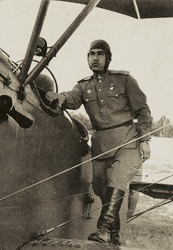

Socialist Realism (1934-1991)
Katerina Clark's Soviet novel (1981) key points
- Socialist realist master plot - reeducation plot; spontaneous youth becomes a conscious communist (Clark claims it's a variant of European Bildungsroman)
- Two characters - the positive hero, who undergoes reeducation, and the mentor, who helps
- Chronotope - future in the present; Clark calls it "modal schizophrenia"
- Clark models her analysis of SR formulaic narratives on Propp's morphology of wonder tale
- Volodia Padunov: The fewer limbs you have, the more spirit per pound of flesh
- Model texts: Clark views this as a feature shared with hagiographic writing (SR was imitation of model texts, not original)
- Another appraoch to SR: Sinyavsky compared SR to neo-classicism - What is Socialist Realism? (1960, not in Soviet Union)
Socialist realist model texts
- Time Forward! (Valentin Kataev, 1932), production novel
- The Rout (Aleksandr Fadeev, 1926)
- Tale of a Real Man (Boris Polevoi, 1946)
